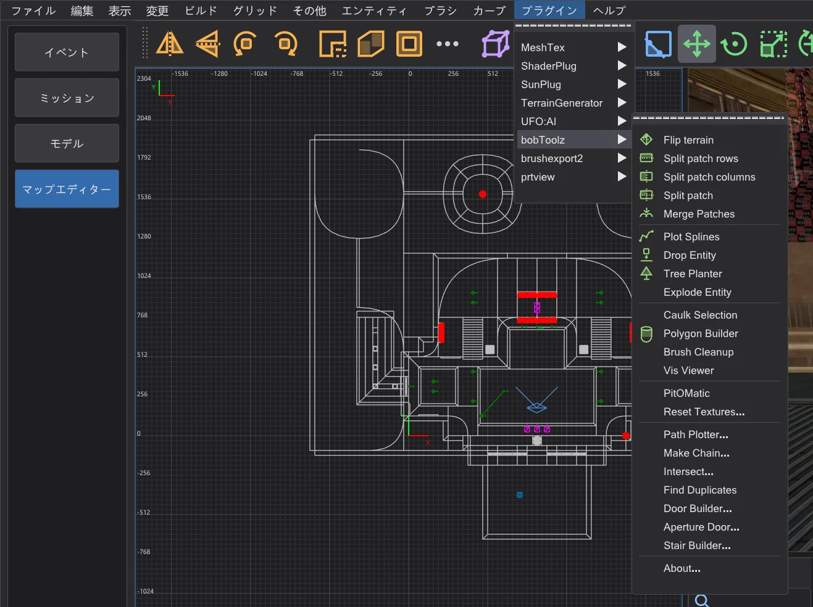
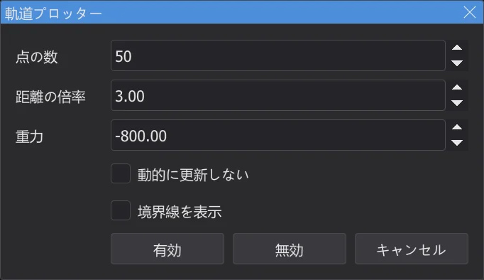
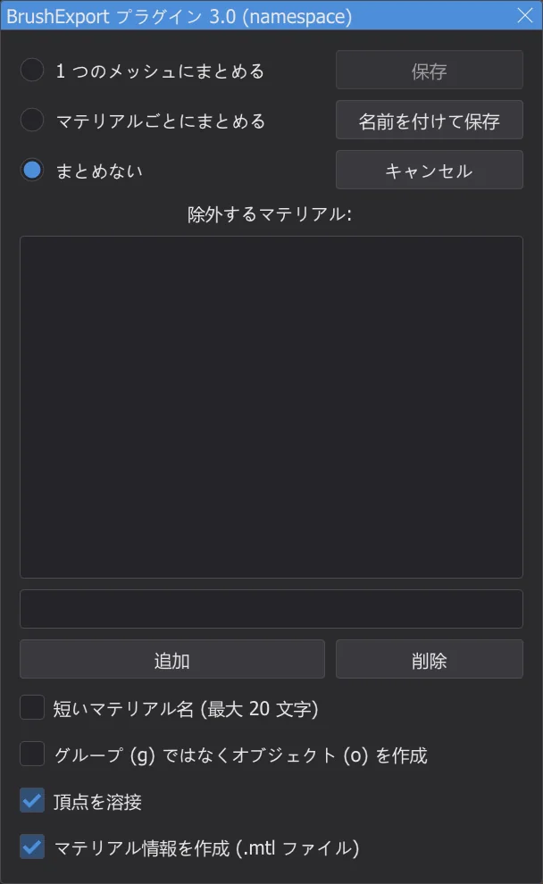
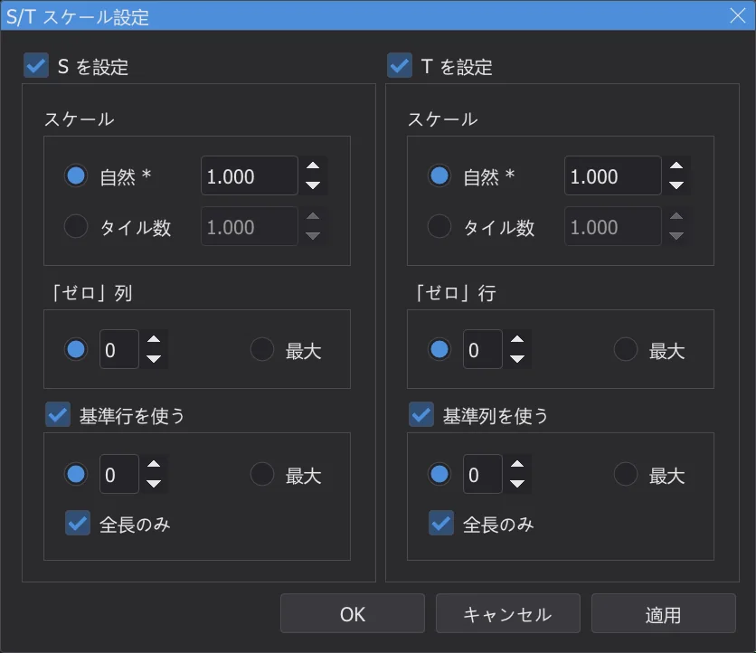

マップエディター:プラグイン
プラグイン メニューには NetRadiant-Custom のすべてのプラグイン(bobToolz、brushexport2、MeshTex、ShaderPlug、SunPlug、UFO:AI、prtview)が、すべての項目とダイアログ付きで入っています。ソースコードから移植したものです。
⟦プラグイン⟧ メニュー#

項目は、NetRadiant-Custom でプラグインが使っている英語名のままです。ダイアログはプログラムの言語で表示され、NetRadiant の用語(英語) をオンにすると NetRadiant-Custom の英語になります。どのプラグインにも About 項目があります。メッセージはコンソールに表示され、エラーは赤になります。プラグインによる変更は 1 回ごとに元に戻せます。
bobToolz#
| 項目 | 内容 |
|---|---|
| Flip terrain | 選択した 2 つの地形ブラシ(辺を共有する三角柱)の共通の対角線を反対向きにします。 |
| Split patch rows / columns、Split patch | 選択したパッチを行に沿って、列に沿って、または両方で帯状に分割します。 |
| Merge Patches | 辺を共有する 2 つ以上の選択パッチを 1 つにまとめます。 |
| Plot Splines | info_train_spline_main のチェーンと info_train_spline_control の制御点が作る経路を描きます(Make Chain を参照)。 |
| Tree Planter、Drop Entity | 地面のブラシを選択して Tree Planter をオンにすると、XY ビューで左クリックするたびに data\karte\bt\tp_ent.txt のエンティティがその上に置かれます。モデル、角度、スケールはランダムです(付属のファイルには Quake の木のモデルが書かれているので、自分のモデルに書き換えてください)。Drop Entity は選択したエンティティを同じブラシの上に落とします。 |
| Explode Entity | 選択したブラシエンティティを分割し、各ブラシを同じキーを持つ別々のエンティティにします(worldspawn は不可)。 |
| Caulk Selection | 選択したブラシとパッチのすべての面に caulk テクスチャを付けます。 |
| Polygon Builder | ポリゴンビルダー ダイアログ:選択した 1 つのブラシを指定した辺の数の角柱にします。縁付きの中空、反転、上辺に合わせることもできます。 |
| Brush Cleanup | マップのすべてのブラシから無効な面と重複した面を取り除き、その数を表示します。 |
| Vis Viewer | マップの隣にあるコンパイル済みの <マップ>.bsp(ビルド後、または .bsp を開く 後の元のファイル)を読み、カメラまたは選択位置から見える BSP リーフを表示します。BSP リーフ ウィンドウに一覧が出ます。 |
| PitOMatic | 選択した 1 つのブラシを落とし穴にします。落下の叫び声(*falling1.wav)とパワーアップ除去のトリガー、底に trigger_hurt を作ります。 |
| Reset Textures... | テクスチャリセット ダイアログ:テクスチャ名を置き換え、スケール・シフト・回転をリセットします。選択したブラシまたはすべてのブラシが対象です。 |
| Path Plotter... | trigger_push の飛行経路を表示します(下記参照)。 |
| Make Chain... | チェーン作成 ダイアログ:制御点付きの info_train_spline_main エンティティのチェーンを作り、基本名で名前を付けます。 |
| Intersect...、Find Duplicates | 互いに交差するブラシ(マップ全体または選択したブラシの中から。重複だけに絞ることも可)、または別のブラシとまったく同じブラシをすべて選択します。 |
| Door Builder... | 選択した 1 つのブラシを 2 枚のドア(func_door)にします。ドアと枠のテクスチャは bt\door-tex*.txt から選び、向きは南北または東西です。 |
| Aperture Door... | 選択したブラシから絞り式ドア(セグメントでできたアイリス)を作ります。パラメーターから、または多角形の輪郭から作れます。 |
| Stair Builder... | 選択した 1 つのブラシを階段にします。段の高さ、方向、スタイル(Original、Bob's Style、Corner Style)、メインと蹴上げのテクスチャ、必要ならディテールブラシ。 |
Path Plotter
- 1
targetを持つtrigger_pushを選択します。 - 2
プラグイン > bobToolz > Path Plotter... で 軌道プロッター が開きます。経路の点の数、距離の倍率、重力を設定します。有効 で 2D ビューとカメラに経路が描かれます。

NetRadiant-Custom と同じ値の 軌道プロッター ダイアログ。 - 3
ターゲットを動かすと経路も追従します(動的に更新しない にチェックを入れた場合を除く)。無効 で経路を消します。

brushexport2#

Export selected as Wavefront Object は選択したブラシを .obj モデルとして書き出します。たとえばモデリングソフトで続きを作るときに使います。ウィンドウでは面のまとめ方(1 つのメッシュにまとめる、マテリアルごとにまとめる、まとめない)、除外するマテリアル(除外するマテリアル:。例:textures/common/caulk)、マテリアル名を短くするか、グループの代わりにオブジェクトを書くか、頂点を溶接するか、.mtl ファイルを書くかを選びます。名前を付けて保存 でファイルを指定し(初回は設定フォルダー内の karte_export フォルダー)、保存 で同じファイルにもう一度書き出します。
MeshTex#

MeshTex は、サーフェスインスペクターでは難しいパッチ(曲面、アーチ、地形)にテクスチャを貼るためのものです。S/T スケール設定 は S と T 方向のスケールを設定します。自然(ブラシの面と同じ、*)またはタイル数で指定し、「ゼロ」列・行から数え、必要なら参照行・列に沿って測ります。情報 は選択したパッチのスケールを表示し、S/T スケール設定 に渡せます。一般関数 は S と T を行・列の距離の一次関数として設定します。Align の各項目はテクスチャをパッチの端に合わせます(最小・最大、伸ばす・縮める、または自動)。Help... には MeshTex 自身の説明が表示されます。
ShaderPlug、SunPlug、UFO:AI、prtview#
| プラグイン | 内容 |
|---|---|
| ShaderPlug | Create tag file はテクスチャブラウザーのタグファイルを書き出します。各シェーダーに、その .shader ファイルの名前がタグとして付きます。テクスチャブラウザーはすぐに読み込み直します(NetRadiant-Custom では再起動後)。 |
| SunPlug | NetRadiant-Custom では ET-MapCoordinator が入っています。マップの大きさから Enemy Territory のコマンドマップ用の mapcoordsmins と mapcoordsmaxs を計算し、設定 で worldspawn に書き込みます。Jedi Academy ではこれらのキーは使われません。 |
| UFO:AI | ゲーム UFO:AI 用のツールです。コンテンツフラグによるフィルター(NoDraw、WeaponClip、ActorClip、StepOn、Level 1~8)、Perform check、worldspawn のキー(Worldspawn、Worldspawn reset)があります。NetRadiant-Custom がどのゲームでも表示するので入っています。 |
| prtview | 最後の BSP 段階のポータルを表示します(マップエディター:マップのビルド を参照)。 |